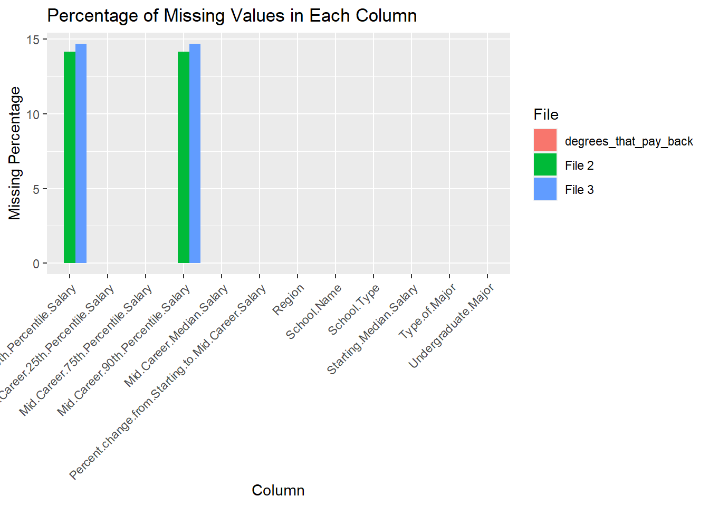

Code
# install.packages(c('viridis', 'tidyverse', 'reshape2'))All data was obtained from the Wall Street Journal based on data from Payscale, Inc
This file contains median salary data (starting, mid-career, percentiles) for various undergraduate majors such as Engineering, Business, Liberal Arts, Healthcare, etc. Useful for seeing salary trajectories and ranges for different majors.
This file shows median salaries (starting and mid-career) grouped by college type - Engineering colleges, Liberal Arts colleges, Ivy League schools, etc. Gives salary outcomes based on college types rather than majors specifically.
This file aggregates salaries by region - West, Midwest, Northeast, South. Shows range of salaries for graduates from schools in different geographic areas. Helps compare regional salary differences.
We took a look at the % of missing values per column in each table (all the code is below the analysis points):
So the main missing data is related to the salary range percentiles in some cases. We could consider dropping those columns or trying imputation methods to fill them in for analysis.
# install.packages(c('viridis', 'tidyverse', 'reshape2'))degrees_that_pay_back <- read.csv("data//raw_data//degrees-that-pay-back.csv")
salaries_by_college_type <- read.csv("data//raw_data//salaries-by-college-type.csv")
salaries_by_region <- read.csv("data//raw_data//salaries-by-region.csv")for (col in colnames(degrees_that_pay_back)){
print(col)
}[1] "Type.of.Major"
[1] "Undergraduate.Major"
[1] "Starting.Median.Salary"
[1] "Mid.Career.Median.Salary"
[1] "Percent.change.from.Starting.to.Mid.Career.Salary"
[1] "Mid.Career.10th.Percentile.Salary"
[1] "Mid.Career.25th.Percentile.Salary"
[1] "Mid.Career.75th.Percentile.Salary"
[1] "Mid.Career.90th.Percentile.Salary"head(degrees_that_pay_back,5) Type.of.Major Undergraduate.Major Starting.Median.Salary
1 Business Accounting $46,000.00
2 Engineering Aerospace Engineering $57,700.00
3 Science Agriculture $42,600.00
4 Social Science Anthropology $36,800.00
5 Engineering Architecture $41,600.00
Mid.Career.Median.Salary Percent.change.from.Starting.to.Mid.Career.Salary
1 $77,100.00 67.6
2 $101,000.00 75.0
3 $71,900.00 68.8
4 $61,500.00 67.1
5 $76,800.00 84.6
Mid.Career.10th.Percentile.Salary Mid.Career.25th.Percentile.Salary
1 $42,200.00 $56,100.00
2 $64,300.00 $82,100.00
3 $36,300.00 $52,100.00
4 $33,800.00 $45,500.00
5 $50,600.00 $62,200.00
Mid.Career.75th.Percentile.Salary Mid.Career.90th.Percentile.Salary
1 $108,000.00 $152,000.00
2 $127,000.00 $161,000.00
3 $96,300.00 $150,000.00
4 $89,300.00 $138,000.00
5 $97,000.00 $136,000.00for (col in colnames(salaries_by_college_type)){
print(col)
}[1] "School.Name"
[1] "School.Type"
[1] "Starting.Median.Salary"
[1] "Mid.Career.Median.Salary"
[1] "Mid.Career.10th.Percentile.Salary"
[1] "Mid.Career.25th.Percentile.Salary"
[1] "Mid.Career.75th.Percentile.Salary"
[1] "Mid.Career.90th.Percentile.Salary"head(salaries_by_college_type,5) School.Name School.Type
1 Massachusetts Institute of Technology (MIT) Engineering
2 California Institute of Technology (CIT) Engineering
3 Harvey Mudd College Engineering
4 Polytechnic University of New York, Brooklyn Engineering
5 Cooper Union Engineering
Starting.Median.Salary Mid.Career.Median.Salary
1 $72,200.00 $126,000.00
2 $75,500.00 $123,000.00
3 $71,800.00 $122,000.00
4 $62,400.00 $114,000.00
5 $62,200.00 $114,000.00
Mid.Career.10th.Percentile.Salary Mid.Career.25th.Percentile.Salary
1 $76,800.00 $99,200.00
2 N/A $104,000.00
3 N/A $96,000.00
4 $66,800.00 $94,300.00
5 N/A $80,200.00
Mid.Career.75th.Percentile.Salary Mid.Career.90th.Percentile.Salary
1 $168,000.00 $220,000.00
2 $161,000.00 N/A
3 $180,000.00 N/A
4 $143,000.00 $190,000.00
5 $142,000.00 N/Afor (col in colnames(salaries_by_region)){
print(col)
}[1] "School.Name"
[1] "Region"
[1] "Starting.Median.Salary"
[1] "Mid.Career.Median.Salary"
[1] "Mid.Career.10th.Percentile.Salary"
[1] "Mid.Career.25th.Percentile.Salary"
[1] "Mid.Career.75th.Percentile.Salary"
[1] "Mid.Career.90th.Percentile.Salary"head(salaries_by_region,5) School.Name Region Starting.Median.Salary
1 Stanford University California $70,400.00
2 California Institute of Technology (CIT) California $75,500.00
3 Harvey Mudd College California $71,800.00
4 University of California, Berkeley California $59,900.00
5 Occidental College California $51,900.00
Mid.Career.Median.Salary Mid.Career.10th.Percentile.Salary
1 $129,000.00 $68,400.00
2 $123,000.00 N/A
3 $122,000.00 N/A
4 $112,000.00 $59,500.00
5 $105,000.00 N/A
Mid.Career.25th.Percentile.Salary Mid.Career.75th.Percentile.Salary
1 $93,100.00 $184,000.00
2 $104,000.00 $161,000.00
3 $96,000.00 $180,000.00
4 $81,000.00 $149,000.00
5 $54,800.00 $157,000.00
Mid.Career.90th.Percentile.Salary
1 $257,000.00
2 N/A
3 N/A
4 $201,000.00
5 N/Acat("For degrees_that_pay_back:", "\n", "\n")For degrees_that_pay_back:
degrees_missing <- sapply(degrees_that_pay_back, function(x) {
mean(x == "N/A") * 100
})
print(degrees_missing) Type.of.Major
0
Undergraduate.Major
0
Starting.Median.Salary
0
Mid.Career.Median.Salary
0
Percent.change.from.Starting.to.Mid.Career.Salary
0
Mid.Career.10th.Percentile.Salary
0
Mid.Career.25th.Percentile.Salary
0
Mid.Career.75th.Percentile.Salary
0
Mid.Career.90th.Percentile.Salary
0 cat("For salaries_by_college_type:", "\n", "\n")For salaries_by_college_type:
college_missing <- sapply(salaries_by_college_type, function(x) {
mean(x == "N/A") * 100
})
print(college_missing) School.Name School.Type
0.00000 0.00000
Starting.Median.Salary Mid.Career.Median.Salary
0.00000 0.00000
Mid.Career.10th.Percentile.Salary Mid.Career.25th.Percentile.Salary
14.12639 0.00000
Mid.Career.75th.Percentile.Salary Mid.Career.90th.Percentile.Salary
0.00000 14.12639 cat("For salaries_by_region:", "\n", "\n")For salaries_by_region:
region_missing <- sapply(salaries_by_region, function(x) {
mean(x == "N/A") * 100
})
print(region_missing) School.Name Region
0.0000 0.0000
Starting.Median.Salary Mid.Career.Median.Salary
0.0000 0.0000
Mid.Career.10th.Percentile.Salary Mid.Career.25th.Percentile.Salary
14.6875 0.0000
Mid.Career.75th.Percentile.Salary Mid.Career.90th.Percentile.Salary
0.0000 14.6875 library(tidyverse)Warning: package 'tidyverse' was built under R version 4.2.3Warning: package 'ggplot2' was built under R version 4.2.3Warning: package 'tibble' was built under R version 4.2.3Warning: package 'tidyr' was built under R version 4.2.3Warning: package 'readr' was built under R version 4.2.3Warning: package 'purrr' was built under R version 4.2.3Warning: package 'dplyr' was built under R version 4.2.3Warning: package 'stringr' was built under R version 4.2.3Warning: package 'forcats' was built under R version 4.2.3Warning: package 'lubridate' was built under R version 4.2.3── Attaching core tidyverse packages ──────────────────────── tidyverse 2.0.0 ──
✔ dplyr 1.1.3 ✔ readr 2.1.4
✔ forcats 1.0.0 ✔ stringr 1.5.1
✔ ggplot2 3.4.3 ✔ tibble 3.2.1
✔ lubridate 1.9.2 ✔ tidyr 1.3.0
✔ purrr 1.0.2
── Conflicts ────────────────────────────────────────── tidyverse_conflicts() ──
✖ dplyr::filter() masks stats::filter()
✖ dplyr::lag() masks stats::lag()
ℹ Use the conflicted package (<http://conflicted.r-lib.org/>) to force all conflicts to become errors# Replacing "N/A" with NA in the entire data frame
degrees_that_pay_back <- degrees_that_pay_back %>% mutate_all(~ ifelse(. == "N/A", NA, .))
salaries_by_college_type <- salaries_by_college_type %>% mutate_all(~ ifelse(. == "N/A", NA, .))
salaries_by_region <- salaries_by_region %>% mutate_all(~ ifelse(. == "N/A", NA, .))
missing_percentage_degrees_that_pay_back <- colMeans(is.na(degrees_that_pay_back)) * 100
missing_percentage_salaries_by_college_type <- colMeans(is.na(salaries_by_college_type)) * 100
missing_percentage_salaries_by_region <- colMeans(is.na(salaries_by_region)) * 100
df_degrees_that_pay_back <- data.frame(Column = names(degrees_that_pay_back), Missing_Percentage = missing_percentage_degrees_that_pay_back)
df_salaries_by_college_type <- data.frame(Column = names(salaries_by_college_type), Missing_Percentage = missing_percentage_salaries_by_college_type)
df_salaries_by_region <- data.frame(Column = names(salaries_by_region), Missing_Percentage = missing_percentage_salaries_by_region)
combined_df <- bind_rows(
mutate(df_degrees_that_pay_back, File = "degrees_that_pay_back"),
mutate(df_salaries_by_college_type, File = "File 2"),
mutate(df_salaries_by_region, File = "File 3")
)
ggplot(combined_df, aes(x = Column, y = Missing_Percentage, fill = File)) +
geom_bar(stat = "identity", position = "dodge") +
labs(title = "Percentage of Missing Values in Each Column",
x = "Column",
y = "Missing Percentage") +
theme(axis.text.x = element_text(angle = 45, hjust = 1))
library(tidyverse)
library(viridis)Warning: package 'viridis' was built under R version 4.2.3Loading required package: viridisLiteWarning: package 'viridisLite' was built under R version 4.2.3library(tidyverse)
library(reshape2)Warning: package 'reshape2' was built under R version 4.2.3
Attaching package: 'reshape2'The following object is masked from 'package:tidyr':
smiths# Define function to load CSV files with 'N/A' as missing values
df1 <- read.csv("data//raw_data//salaries-by-college-type.csv", na.strings = "N/A")
df2 <- read.csv("data//raw_data//salaries-by-region.csv", na.strings = "N/A")
# Function to plot missing values
plot_missing_values <- function(df, title) {
df %>%
is.na() %>%
melt() %>%
ggplot(aes(x = Var2, y = Var1, fill = factor(value, labels = c("Present", "Missing")))) +
geom_tile(color = "white") +
scale_fill_manual(values = c("Present" = "Green", "Missing" = "Red")) +
labs(title = title, x = "Columns", y = "Rows") +
theme_minimal() +
theme(axis.text.x = element_text(angle = 45, hjust = 1))+
guides(fill = guide_legend(title = "Values"))
}
# Plot missing values for each column in the first CSV file
plot_missing_values(df1, "Missing Values in File 1")# Plot missing values for each column in the second CSV file
plot_missing_values(df2, "Missing Values in File 2")In both the tables, the missing values of both columns are occuring in the same rows.